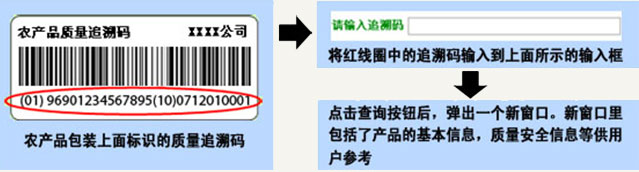

简介
农产品质量快速溯源系统的设计与研发是以国家863计划现代农业技术领域数字农业技术专题2006年度立项的目标导向类课题“农产品质量快速溯源系统设计与运行规范研究及技术实现(2006AA10Z26 9)” 为依托展开的。
课题依托中国标准化研究院，组织山东省标准化研究院、中国科学院数学系统研究院等单位的30余名研究人员共同开展研究。组织上海市标准化研究院、安徽标准化研究院、重庆市标准化研究院、成都市标准化研究院、陕西省标准化研究院、湖北省标准化研究院、湖南省标准化研究等多家单位开展综合示范。
课题的预期目标：根据农产品溯源系统中对各个参与相关方的溯源信息管理要求及其相互关系，提出农产品溯源系统体系架构及网络平台设计方法，研制管理流程合理、功能可拓展、溯源信息负载分配合理、信息汇集的管理中心、区域平台和各类农产品快速溯源原型系统，开发自主知识产权农产品质量快速溯源系统软件和关键技术。通过试点示范建立一个多信息源、多平台、多节点、分布式农产品质量快速溯源系统。
肇庆农产品质量追溯公共服务平台 肇庆市标准化研究院
质量追溯
1
2
3
4
5
6
7
8
9
0
操作流程
